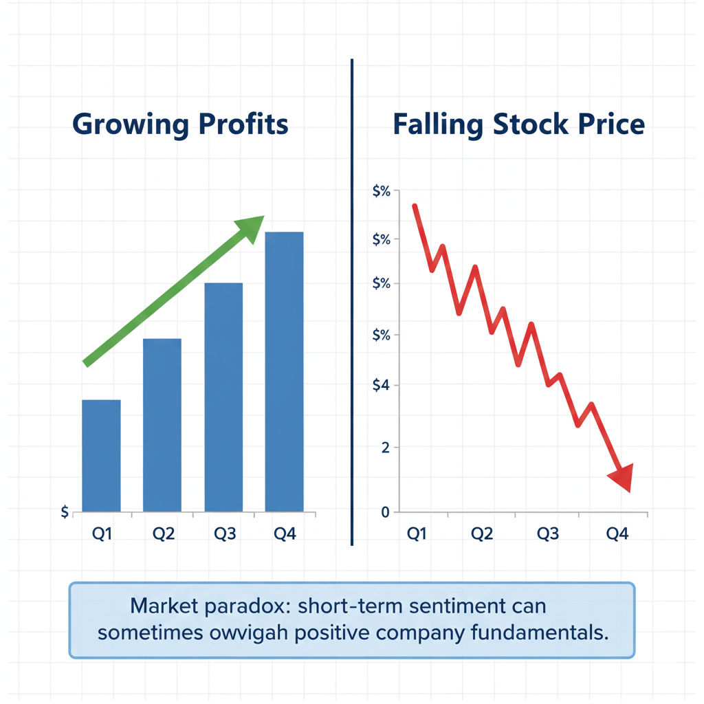
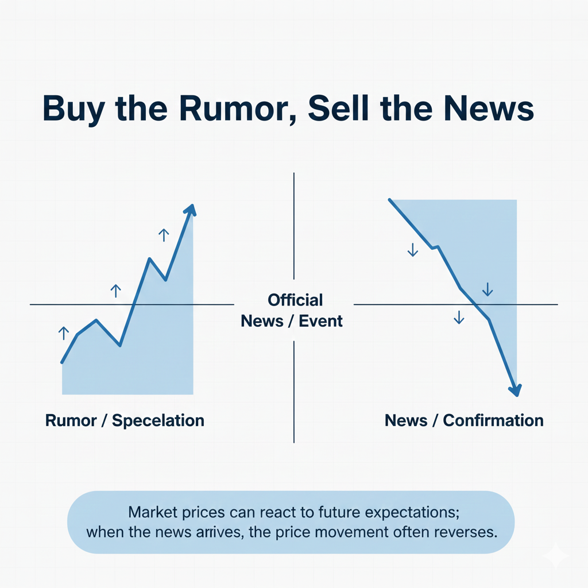
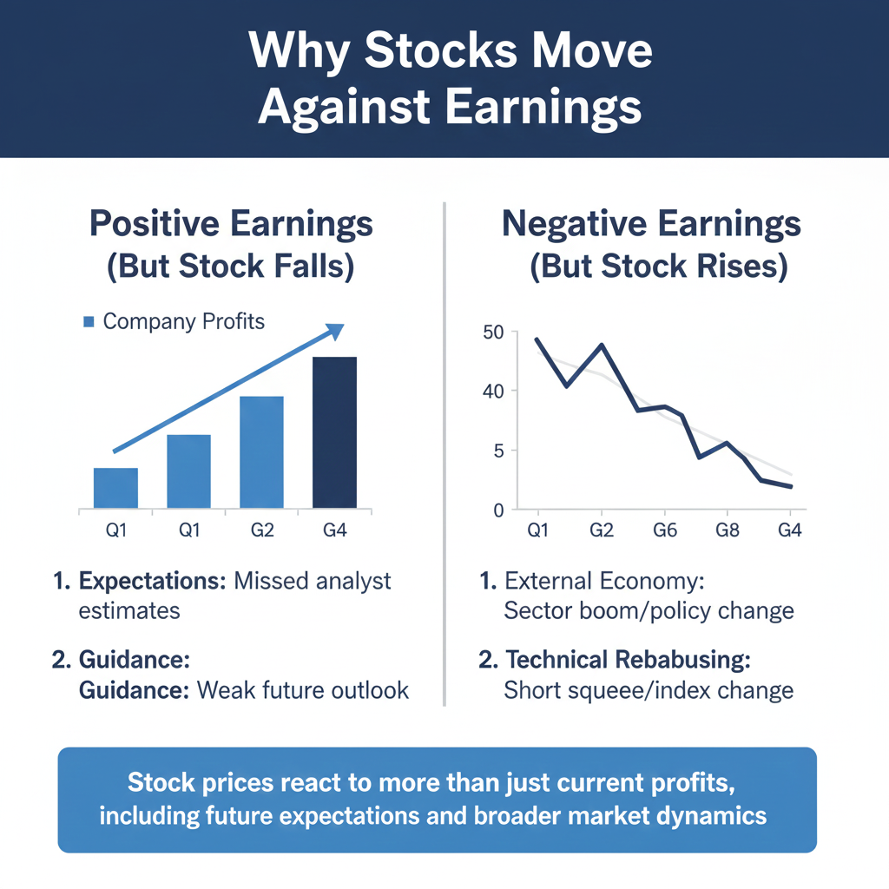

One of the most counterintuitive experiences for a new observer of the stock market is watching a company announce record-breaking profits, only to see its stock price tumble minutes later. It feels like a glitch in the system. If a company is making more money than ever before, logic suggests that the business is more valuable, and therefore, the share price should rise. However, the relationship between corporate earnings and stock market performance is rarely a straight line.
Understanding why stock prices fall despite profits requires a shift in perspective. You must stop looking at the stock market as a reflection of what a company did yesterday and start seeing it as a prediction of what a company might do tomorrow. The market is a forward-looking mechanism that constantly attempts to price in future events long before they happen. When the news finally arrives in the form of an earnings report, the market has often already moved on to the next set of variables.
This disconnect is often the result of a complex interplay between analyst expectations, future guidance, and broader economic shifts. By deconstructing these elements, we can move past the confusion and understand the underlying mechanics that drive price action. This article will explore the primary reasons why profitability doesn't always guarantee a green day on the charts and how the market's internal logic operates differently than many beginners expect.
Table of Contents
Expectations vs. Reality: The Whisper Number
To understand why stock prices fall despite profits, you must first understand the role of analysts. Large investment banks and independent research firms employ analysts who spend their entire careers studying specific industries. Before a company reports its earnings, these analysts release estimates for how much revenue and profit they believe the company will generate. The average of these estimates is known as the "consensus estimate."
The stock market reacts more to the difference between the actual result and the estimate than it does to the result itself. If a company reports a healthy profit, but the market consensus was expecting even higher numbers, the company has "missed" expectations. Even though the company is profitable, it performed worse than the market anticipated. This leads to a recalibration of the company’s value, often causing the stock price to drop immediately.
Furthermore, there is often a "whisper number." This is an unofficial expectation held by traders and institutional investors that may be even higher than the published analyst consensus. If a company beats the official estimate but fails to reach the whisper number, the stock may still sell off. In the world of stock price vs earnings, the raw profit figure is secondary to how that figure compares to the predefined bar set by the market.
The Power of Forward-Looking Guidance
An earnings report consists of two parts: the look-back and the look-ahead. The look-back tells investors how the company performed over the last three months. While this is important, the look-ahead—often called "guidance"—is frequently the more powerful driver of stock price movement. Guidance is the company’s own forecast for its future performance.
Imagine a scenario where a company reports spectacular profits for the previous quarter. However, during the conference call with investors, the leadership mentions that they expect sales to slow down in the coming months due to rising costs or cooling consumer demand. Because the stock market is forward-looking, investors will often ignore the past success and sell the stock based on the projected future struggle. (This concept connects with Stock Market Basics)
Negative guidance can completely overshadow a "beat" in current earnings. Investors are essentially buying a claim on future cash flows. If the company suggests those future cash flows will be smaller than previously thought, the current value of the stock must decrease to reflect that new reality, regardless of how much money the company made last month. In short, the market cares more about the next year than the last quarter.
Understanding the "Priced In" Phenomenon
One of the most common phrases in finance is that a certain piece of news is "priced in." This refers to the idea that the stock price already reflects the anticipated news before the news is officially released. If a company is widely expected to report a massive profit, investors will start buying the stock weeks or months in advance, driving the price up in anticipation of that report.
By the time the company actually releases the earnings report, everyone who wanted to buy the stock based on that good news has already done so. This often leads to a "sell the news" event. Once the profit is confirmed, there are no more new buyers left to push the price higher. Instead, the early buyers decide to sell their shares to lock in their gains. This influx of selling pressure causes the stock price to fall even though the news was objectively positive.
The "priced in" meaning is crucial for beginners to understand because it explains why good news doesn't always lead to higher prices. If the market already expected the news, the announcement itself acts as a conclusion rather than a catalyst. (This relates to the concept of Market Efficiency)
Stock Market Psychology and Sentiment
The stock market is not just a collection of numbers; it is a reflection of human psychology. Stock market psychology plays a massive role in how prices react to earnings. Sometimes, the market enters a period of "irrational exuberance" where stocks are driven to prices that far exceed their fundamental value. In these cases, even a perfect earnings report isn't enough to justify the inflated price, leading to a correction.
Conversely, the market can be gripped by fear or broader pessimism. If investors are generally nervous about the state of the economy, they may use a positive earnings report as an opportunity to exit a position. They might think that this is the "peak" for the company and that things can only get worse from here. This sentiment can lead to a mass exit despite the profitability of the underlying business.
There is also the concept of "quality of earnings." If a company reports a profit, but smart investors notice that the profit came from one-time events—like selling off a piece of equipment or a tax windfall—rather than from selling more products, they may view the profit as unsustainable. A company profits but stock down scenarios often occur when the underlying business growth is stalling, even if the final number looks healthy due to accounting maneuvers.
Macroeconomic and Sector-Wide Influences
Sometimes, a company’s individual performance is overshadowed by what is happening in the broader economy. If the Federal Reserve announces an interest rate hike on the same day a company reports great profits, the stock might fall. This is because higher interest rates generally make stocks less attractive compared to safer assets like bonds, and they increase the cost of doing business.
Sector rotation is another common factor. Professional fund managers often move money out of one industry and into another based on where they think the economy is headed. If a company is part of a sector that is currently out of favor, its stock might fall even if its individual earnings were excellent. The institutional selling pressure in that sector simply outweighs the positive news of a single company.
Currency fluctuations also play a role for multinational corporations. A company might earn a massive profit in foreign markets, but if the local currency has weakened significantly against the dollar, those profits might be worth less when converted back for the final report. Investors look closely at these "headwinds" to determine if the profit growth is real or merely a result of favorable exchange rates.
Profit Taking and Institutional Rebalancing
Finally, we must consider the mechanics of how large institutions trade. Pension funds, mutual funds, and hedge funds often have strict rules about how much of their portfolio can be dedicated to a single stock. If a stock has risen significantly leading up to an earnings report, it might now represent too large a percentage of a fund's total assets.
When the earnings are released, these large institutions may use the high liquidity to sell off a portion of their holdings to rebalance their portfolio. This isn't a reflection of their lack of faith in the company, but rather a mechanical requirement of their fund's rules. However, because they are selling a massive volume of shares, the price naturally drops.
Additionally, many traders use automated "stop-loss" orders or "limit orders" around earnings dates. If the stock price dips slightly due to a minor detail in the report, it can trigger a chain reaction of automated selling. This technical pressure can create a downward move that has nothing to do with the company's long-term profitability and everything to do with the short-term mechanics of the marketplace.
Key Takeaways
- Stock prices are driven by how results compare to analyst expectations, not just the raw profit figures.
- Forward-looking guidance is often more important than past performance in determining a stock's immediate direction.
- The "priced in" effect means the market often reacts to news before it is officially announced.
- Broader economic shifts, such as interest rate changes, can drag down a stock regardless of its individual success.
- Institutional rebalancing and "selling the news" are common mechanical reasons for price declines after earnings.
Conclusion
The stock market is a complex ecosystem where logic often seems inverted. When you see a company report a profit only to watch its value decline, remember that you are witnessing the market's transition from the known past to the uncertain future. The stock price isn't just a scorecard for what has happened; it is a fluctuating consensus on what is likely to happen next.
By understanding the roles of expectations, guidance, and market sentiment, learners can develop a more nuanced view of price movements. Rather than seeing a price drop as a sign of failure, it can be viewed as the market resetting its expectations based on new information. Developing this perspective is a key step in moving from a beginner to an intermediate understanding of financial markets. The disconnect between profits and price is not a flaw in the system, but a fundamental characteristic of how value is determined in a forward-looking economy.
Educational Disclaimer:
This article is for educational and informational purposes only and should not be considered financial or investment advice. Investing involves risk.